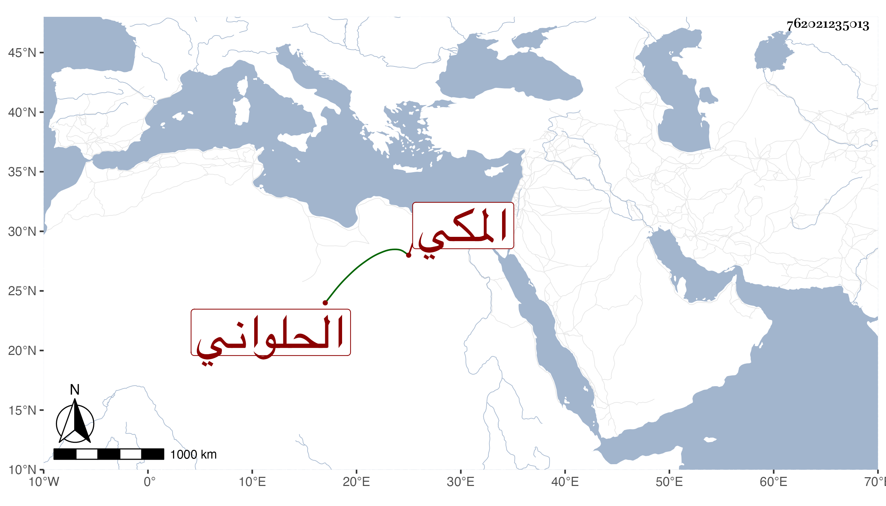

0902Sakhawi.DawLamic.ITO20230111-ara1.EIS1600.762021235013
Biography ID: 762021235013
1226
يوسف بن علي المكي الحلواني ذكره النجم بن فهد في معجمه وأنشد من نظمه :
| ألا ليت شعري هل أبيتن ليلة | بوادي منى حيث الحجيج نزول |
| وهل أردن ماء العسيلة صاديا | ليشفى عليل أو يبل غليل |
